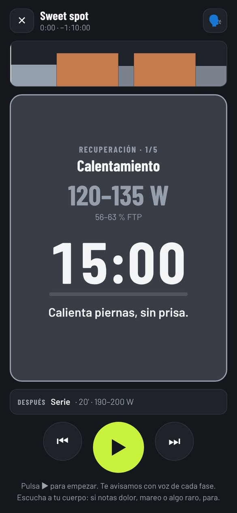
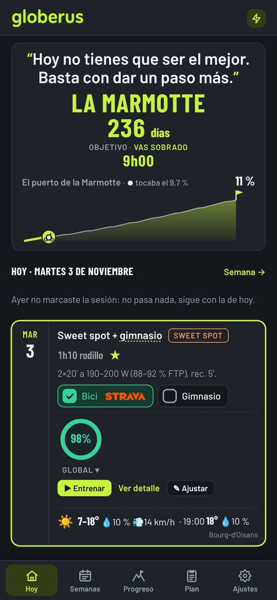
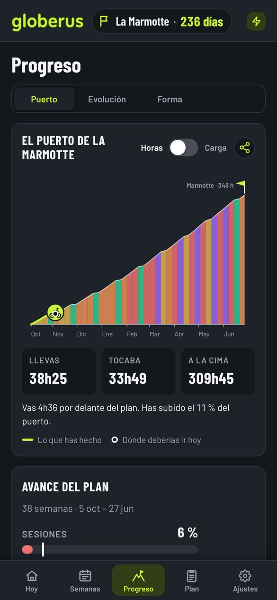
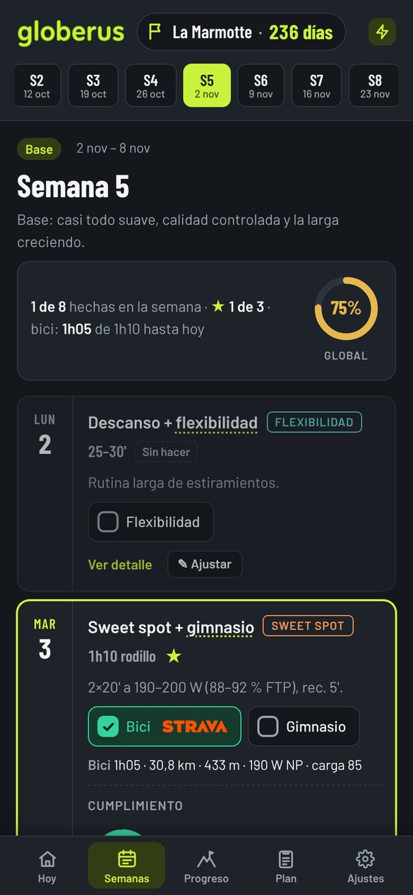
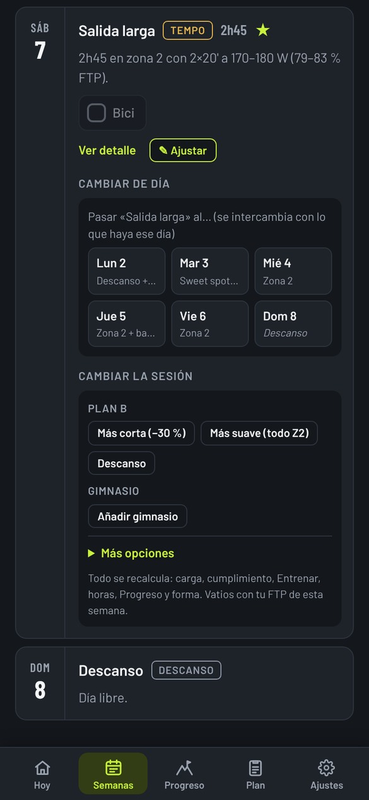
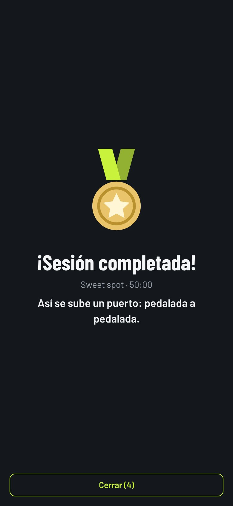
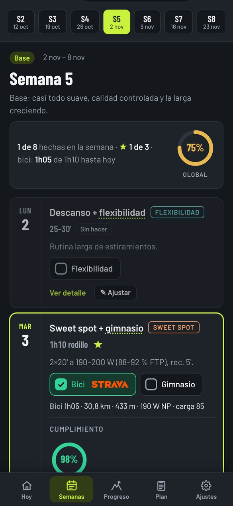
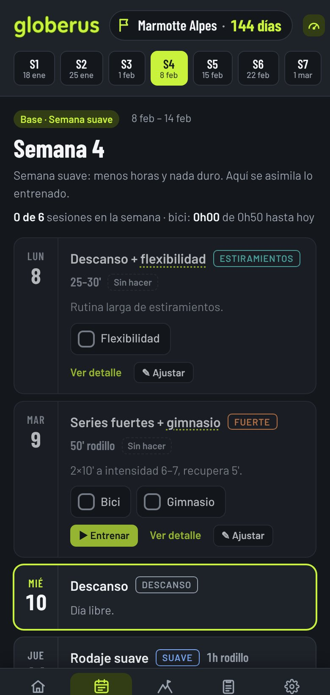
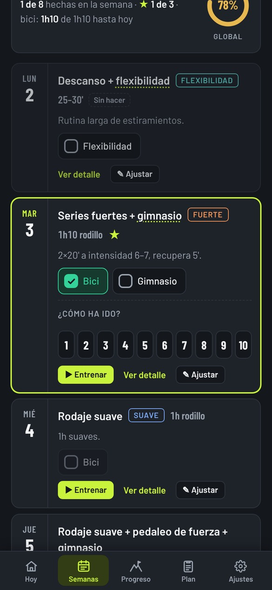
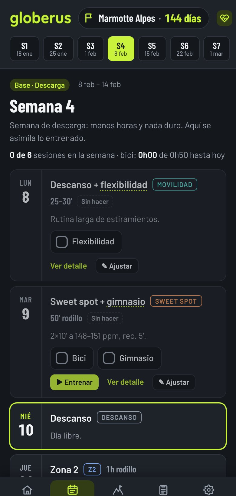

Globerus te lo pone fácil: deja que la app cree una estructura adaptada a ti, o trae tu propio plan de entrenamiento si ya lo tienes diseñado. Sin complicaciones de profesionales ni sistemas de élite: una guía clara y limpia para entrenar de forma regular. Porque para un aficionado, sumar semanas con constancia es lo que realmente cuenta.



No necesitas entrenar perfecto. Necesitas entrenar con regularidad.
Para un ciclista aficionado, mejorar no suele depender de una sesión perfecta, sino de acumular entrenamientos de forma regular. Globerus te propone una estructura sencilla según tu objetivo y el tiempo que puedes dedicarle. La meta es que puedas seguir el plan semana a semana y construir constancia, sin convertir el ciclismo en otra obligación imposible.
Estas son pantallas reales de Globerus. Descubre el plan, consulta qué toca entrenar y sigue la evolución de tu preparación. La idea no es perseguir la sesión perfecta, sino mantener una rutina que puedas cumplir.
Al abrir la app ves todo lo que te interesa hoy en un solo vistazo. Sin menús enrevesados ni configuraciones infinitas:
La vida de un cicloturista tiene imprevistos: trabajo, familia, lluvia o un día que simplemente estás cansado. Globerus se adapta a tu día a día:


Los días que toca rodillo entre semana, pon el móvil en el manillar o la mesa y pulsa ▶ Entrenar:

Basta de hojas de cálculo aburridas y números fríos. En Globerus tienes un seguimiento visual, intuitivo y adaptado a ti:

El plan y la lógica son exactamente los mismos. Cambia la forma en que mides la intensidad: con potenciómetro, con pulsómetro o simplemente escuchando a tu cuerpo.
¿No tienes potenciómetro de 500 € ni banda de pulso? No te hace falta. Globerus traduce cada entrenamiento a una escala sencilla del 1 al 10 en lenguaje llano:


Entrena con pulsómetro a partir de tu FC máxima (o estimada con 220 − edad si no la conoces).

Si tienes potenciómetro en la bici o rodillo inteligente, las sesiones se calculan en vatios a partir de tu FTP:
En unos pocos pasos defines tu objetivo, tu disponibilidad y cómo medirás el esfuerzo. Globerus organiza esa información en un plan estándar y sencillo: una estructura útil para orientarte y ayudarte a entrenar con regularidad, no un entrenamiento individualizado de entrenador personal.
Eliges tu modo (Vatios, Pulso o Sensaciones), edad, peso y tu FTP o nivel. Si no conoces tu FTP, la app lo estima con «No lo sé».
Indicas el nombre, la fecha, los km, el desnivel y tiempo objetivo (opcional). Globerus calcula el iCM de cada salida y valora si está a tu alcance.
Pones las horas en tu semana de más carga, qué días puedes salir, si haces rodillo entre semana y si añades trabajo de fuerza en casa o gimnasio.
Estructurado semana a semana por fases (Base, Construcción, Específico, Descarga y Afinado). Puedes conectar Strava y avisos diarios si lo deseas.
Todo explicado con claridad para que no tengas dudas ni antes ni durante tu entrenamiento.
El iCM significa Índice de Carga frente a la Marcha. Te indica cuánto esfuerzo supone cada salida en comparación con la exigencia total del día de la marcha. Así sabes si tus tiradas largas te están preparando adecuadamente para la distancia y el desnivel real de la prueba.
¡Absolutamente nada! Puedes usar la función ✎ Ajustar para cambiar la sesión a otro día o elegir una alternativa (hacerla más corta, más suave o descanso).
No. Strava es completamente opcional. Si lo conectas, tus salidas se marcan solas; pero si no lo tienes, puedes marcar las casillas de bici, gimnasio y flexibilidad a mano con un solo toque. Tampoco necesitas potenciómetro: puedes usar el Modo Sensaciones (del 1 al 10) o el Modo Pulso.
Sí. Si tu entrenador te pasa un plan o prefieres diseñarlo tú en una hoja de cálculo, Globerus te permite descargar una plantilla e importarlo fácilmente desde Ajustes → Plan y marcha → Hoja de cálculo.
👉 Ver instrucciones detalladas para la importación y plantilla CSV
Tus datos se guardan en tu propio móvil y cuentan con copia automática en tu cuenta de Google Drive (gestionada por Android una vez al día con wifi y cargando). Globerus no tiene servidores externos ni almacena tus planes ni cuentas. Si cambias de móvil e instalas Globerus desde Google Play con tu cuenta, tu plan se recupera solo. Además, en Ajustes → Ayuda, copia y soporte puedes guardar o restaurar una copia manual en un archivo en cualquier momento.
En la app, dentro de Ayuda, copia y soporte, tienes el botón Escribir a soporte.
Te abrirá directamente el correo con el ID de tu plan (ej. GLB-RV9N-55) para que te ayudemos de inmediato.
También puedes escribir directamente a:
soporte@globerus.com.
Estamos aquí para ayudarte, escríbenos directamente.
Globerus para Android
Una planificación sencilla, estructurada y flexible para entrenar con constancia semana a semana.